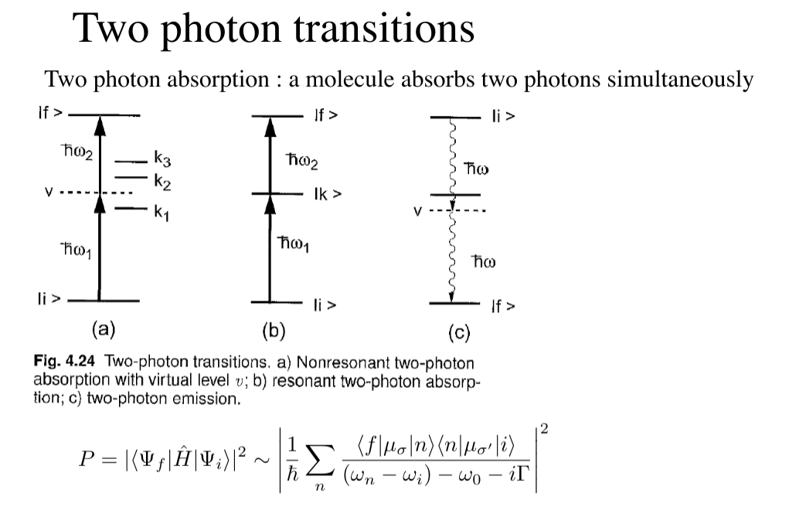

Contents:
- questions
- good resources
- lectures
- 1: introduction
- 2: WebMO practice
- 3: intro to QM
- 4: intro to EMR
- 5: light-matter interaction
- 6: prep for final presentation
- 8: molecular symmetry and group theory 1
- 9: molecular symmetry and group theory 2
- 10: molecular rotation and spin statistics 1
- 11: molecular rotation and spin statistics 2
- born-oppenheimer approximation
- (and BO adiabatic approximation)
- separation of vibration and rotation
- can further seperate vibrational and rotational motion
- rotation of diatomic molecules
- polyatomic molecules: linear
- polyatomic molecules: symmetric top
- polyatomic molecules: spherical top
- polyatomic molecules: asymmetric top
- optical selection rule: diatomic and linear
- symmetric and asymmetric top molecules
- general notes
- 12: molecular vibration
- 13: vibrational infrared and raman spectroscopy
- 14: electronic spectroscopy
- 15: electronic spectroscopy
- 16: magnetic resonance
- 17: spectroscopy
- 18 - 25:
- Two-photon doppler free spectroscopy
- REMPI (Resonant Enhanced MultiPhoton Ionization)
- Saturation absorption spectroscopy
- Fluorescence correlation spectroscopy
- Cavity ring down spectroscopy
- Frequency comb spectroscopy
- Coherant Anti-Stokes Raman spectroscopy
- Fluorescence resonance energy transfer spectroscopy
- Photoelectron velocity map imaging spectroscopy
- Two-dimensional infrared spectroscopy
- Multi-dimensional NMR spectroscopy
- Scanning near field optical spectroscopy
- Optical coherence tomography
- Positron emission tomography
- THz spectroscopy and Imaging
- Atto-second time resolved spectroscopy
- Operando spectroscopy
- Circular dichroism spectroscopy, optical rotatory dispersion
- Raman optical activity
questions
- what do the different polarizations mean
- what do s and p waves represent
good resources
lectures
1: introduction
- basic spectroscopy: light source -> sample -> prism -> detector
- act of separating light
- history of spectroscopy:
- 1666 Newton: continuous spectrum of sun
- 1814 Fraunhofer: found sharp dark lines in sunlight (discrete -> indicts QM)
- 1900: development of QM
- interstellar molecules (unstable)
- our universe:
- molecular clouds:
- very cold: 10 - 100 K
- not dense: $$\frac{10^{3}}{cm^3}$$
- this means not many collisions happening, so very unstable molecules can exist <- spectroscopic observation plays important role
- atmosphere:
- hot: 300 K
- dense: $$\frac{10^{20}}{cm^3}$$
- molecular clouds:
- spectroscopy hydrogen atom: chief experimental basis for theories and structure of matter
- first spectra before QM: Angstrom and Rydberg
- spectra with QM: Bohr
- de Broglie: duality of matter $$\lambda = \frac{h}{p}$$ E = hν
- Schrodinger
- relativistic quantum theory:
- Dirac: combine Schrodinger and Einstein
- $$E = ih \frac{\partial}{\partial \tau}$$
- Einstein: relativity (things moving at speed of light)
- Dirac: combine Schrodinger and Einstein
- splitting of hydrogen: bohr -> dirac -> qed

2: WebMO practice
- dihedral angle: rotate relative to a plane
- linear molecule: 2 rotational constants
- non-linear molecule: 3 rotational constants
- first optimize then calculate vibrational frequency
3: intro to QM
4: intro to EMR
electromagnetic radiation
- electric () and magentic () fields pervade all space; they are vectors with three components (x, y, z)
- in vacuum, speed of light is 2.998 × 108 m/s
- general form: E(r, t) = E0cps(wt − k dotr)
- where E0 is the amplitude vector, k is propagation vector, with r being vector containing x, y, z
- planck relation: $$E = hv = \hbar w = \frac{hc}{\lambda}$$
- 1 eV = 1.602 × 10−19 J = 8065.54 cm −1
fields (EMR fields)
- 6 fields that are related by these two equations: $$ \vv{D} = \epsilon \vv{E} = \epsilon_0 \vv{E} + \vv{P}$$ $$ \vv{B} = \epsilon \vv{E} = \mu_0 \vv{H} + \vv{M}$$
- $$\vv{E}$$ and $$\vv{H}$$ (electric and magnetic field) are perpendicular to each other and the propagation vector $$\vv{k}$$
- $$H_0 = \sqrt{\frac{\epsilon}{\mu}}E_0$$
polarization of light
- light is transverse wave: osciallations of $$\vv{E}$$ and $$\vv{H}$$ are perpendicular to propagation direction
- $$ k = |\vv{k}| = \frac{2 \pi}{\lambda} = \frac{w}{c}$$
- still have DOF in plane perpendicular to $$\vv{k}$$, which relates to the polarization of light
- unpolarized light: no perferred direction for $$\vv{E}$$, can be any direction perpendicular, is a statistically mixed state
- polarized light: the polarization of $$\vv{E}$$ can rotate during oscillation, the angle
- for light in the z direction: (Ex0cos(kz − wt), Ey0cos(kz − wt + θ), 0)
- plane/linearly polarised: θ = 0
- elliptically polarized light: $$\theta = +/- \frac{\pi}{2}$$, and Ex0 ≠ Ey0 left/right hand
- circularly polarized light: Ex0 = Ey0, L/R
- for light in the z direction: (Ex0cos(kz − wt), Ey0cos(kz − wt + θ), 0)
- light is transverse wave: osciallations of $$\vv{E}$$ and $$\vv{H}$$ are perpendicular to propagation direction
angular momentum and light
L/R circularly polarized photons have angular momentum +/ − ℏ
- no Sz = 0 photons as light must remain transverse (what does this mean)
- photon is a massless particle, don’t actually haves spin
- have helicity: value of projection of spin operator onto the momentum operator
- photon is a massless particle, don’t actually haves spin
- unpolarized light: random statistical mixture of L/R
- polarised light: coherent superposition of L/R circularly polarized light
- no Sz = 0 photons as light must remain transverse (what does this mean)
propagation of light
- speed of light in vacuo: $$c_0 = \frac{1}{\sqrt{\epsilon_0 \mu_0}}$$
- speed of light in medium: $$c_0 = \frac{1}{\sqrt{\epsilon \mu}}$$ where ϵ and μ are characteristic to the medium
- refractive index: $$n = \frac{c_0}{v} = \sqrt{\frac{\epsilon \mu}{\epsilon_0 \mu_0}} \geq 1$$, where μ is magnetic permittivity
- for nonmagnetic media: $$n = \sqrt{\frac{\epsilon}{\epsilon_0}} = \sqrt{\epsilon_r}$$, where ϵr is the relative electric permittivity
- dielectric constant: measured by response to static/low frequency electric field
reflection and refraction
- frequency (energy) is unchanged from vacuum value when passing through a medium, v = v0, so since c = c0/n: the wavelength is reduced: λ = λ0/n
- $$E = hv = \frac{c_0 / n}{ \lambda_0 / n}$$
- reflection (specular, meaning mirror like): θinc = θrefl
- refraction (snells law): n1sinθinc = n2sinθrefr
- polarization:
- determines the reflectivity
- R is reflectance, T = 1 − R is the transmittance
- for s and p waves: with T = 1 − R
- Fresnel equation
- $$R_s = |\frac{n_1 cos \theta_i - n_2 cos \theta_t}{n_1 cos \theta_i + n_2 cos \theta_t}|^2$$
- $$R_p = |\frac{n_1 cos \theta_t - n_2 cos \theta_i}{n_1 cos \theta_t + n_2 cos \theta_i}|^2$$
- another form:
- $$R_s = |\frac{sin(\theta_2 - \theta_1)}{sin(\theta_2 + \theta_1)}|^2$$
- $$R_p = |\frac{tan(\theta_2 - \theta_1)}{tan(\theta_2 + \theta_1)}|^2$$
- normal incidence: θi = θt = 0, then $$R = R_s = R_t = (\frac{n_1 - n_2}{n_1 + n_2})^2$$
- total internal reflection: when n1 > n2, there is a critical angle, which Rs, Rt = 1

- brewster’s angle: when θt + θi = 90deg Rp → 0 and Tp → 1, p polarized light will not be reflected, or if the incident light is unpolarized, only s polarized light will reflect, this is how you can produce polarized light
- θB = arctan(n2/n1)
- no reflection for p wave
- dispersion
- sellmeier equation (empirical relation between n and λ)

- sellmeier equation (empirical relation between n and λ)
- absoption and refractive index
- normal regions of dispersion separated by regions of anomalous dispersion between different regions of NMR spectrum
- kramers-kronig index
- birefringence
- refractive index: depends on angle between polariztion of light and crystal axis
- frequency (energy) is unchanged from vacuum value when passing through a medium, v = v0, so since c = c0/n: the wavelength is reduced: λ = λ0/n
5: light-matter interaction
radiation density and intensity of light
- let ρ be volume density of energy in EM radiation J/m3
- to find contributions at various frequencies ρ(v) is energy density per unit frequency, and $$ ρ = ∫0^inf p(v) dv$
- intensity of light: I = ∫0infI(v)dv
- photon flux: number of photons flowing through a unit area per unit time $$F = \frac{I}{(hv)}$$
- relations: I(v) = p(v)c = p(v)(c0/n)
- $$I(v) = \frac{1}{2} \epsilon_0 E^2_0 c$$, where E0 is the amplitude for electric field osciallations at frequency v
absorption and emission
- consider a two level system: can have three processes:
- absorption
- spontaneous emission
- stimulated emission

- A and B are transition probabilities, N1, N2 are populations
- Einstein’s treatment: @ thermal equilibrium, population ratio given by Boltzmann factor, with degeneracies g: $$\frac{N_2}{N_1} = \frac{g_2}{g_1} e^{-hv / kT}$$, where hv = E2 − E1
- spontaneous decay (no radiation) kinetic rate law: $$\frac{-d N_{2}}{dt} = A_{21}N_{2}$$, N2(t) = N2(0)e−A21t, so radiative lifetime of excited state is $$\frac{1}{A_{21}}$$
- with radiation:
- upward transition: W12 = N1B12ρ(v)
- downward transition: W21 = N2B21ρ(v) + N2A21
- at eq: these two rates must be equal, so we can solve for ρ(v) and insert the thermal eq Boltzmann factor and equate to thermal blackbody spectrum:
- $$\frac{A_{21}}{(g_1/g_2) e^{\frac{hv}{kT}} B_{12} - B_{21}}$$
- we get g1B12 = g2B21: equal probability of 1 to 2 or 2 to 1
- and $$\frac{A_{21}}{B_{21}} = \frac{8 \pi h v^3}{c^3} \propto v^3$$
- higher frequency: spontaneous emission
- lower frequency: stimulated emission
transition dipole momentum
- transition rate determined by “transition dipole moment”
- transition dipole moment between two states n and m is a vector: $$\mu_{mn} = \int \psi_m^* \hat{\mu} \psi_n dV = \langle m | \hat{mu} | n \rangle $$
- $$\hat{mu}$$ is the electric dipole moment operator: $$\hat{mu} = \sigma_i q_i r_i$$
- transition rates determined by Einstein coefficients times a lineshape factor resonantly peaked at transition frequency (E2 − E1), enforces energy conservation
beer’s law
- not covered much, study more later
line profiles for spectral lines
- conservation of energy: v = v12: $$v_{12}$ splittings between eigenvalues - $$δ(v - v12)$$
- reality: emission/absoption never perfectly monochromatic (single wavelength/color): each line has characteristic shape/profile, with certain width δv, quantified as FWHM
- lines spaced apart less than δv cannot be seperated/resolved
- common line shape:
- lorentzian: broadening by the natural lifetime of the excited state
- guassian: inhomogeneous broadened lines (Doppler broadening)
- voigt: mixes guassian and lorentzian
- convolution of two and appropriate when homogeneous and inhomogeneous mechanisms are important
- natural linewidth
6: prep for final presentation
8: molecular symmetry and group theory 1
- operators:
- Ê is identity operator
9: molecular symmetry and group theory 2
- group theory and quantum mechanics
- point symmetry operator R
- representation of R based on point in 3D space: real orthogonal 3 × 3 rep M = Γ(R)
- symmetry operations as operators on space of wavefunctions
- generalization of symmetry on arbitrary point: $$r = M r = \begin{bmatrix} x^, \\ y^, \\ z^, \end{bmatrix}$$
- we can define the operator P̂R by
- P̂R|ψ⟩ = P̂R|ψ(x, y, z)⟩ = |ψ(M−1r)⟩=|ψ(x,, y,, z,,)⟩
- interested in finite dimensional subspace of Hilbert space (5D space spanned by 3d orbitals): basis set is set of solutions of Schrodinger equation, eigenfunctions of Ĥ
- point symmetry operator R
- symmetrization
- projection operator $$\hat{P^{\mu}}$$: annihilates all functions that does not belong to μ-th irreducible representation
10: molecular rotation and spin statistics 1
11: molecular rotation and spin statistics 2
born-oppenheimer approximation
- fixed nucleus
- total hamiltonian consists of kinetic energy of nucleus, electrons, and coloumb potential energy between nuclei, nuclei-electrons, and electrons
(and BO adiabatic approximation)
- wavefunction is product of electron and nuclei Ψn, i = χi(n)(R)ψnel(r; R)
- for a fixed R we get the electronic schrodinger equation: Ĥ = Ĥnuc + Ĥelec, where Ĥelec = ψnel(r; R) = Enel(R)ψnel(r; R)
- nuclear schrodinger equation: [Ĥnuc + Enel(R)]χin(R) = En, iχi(n)(R)
- then by changing the value of R, we get the potential energy surface Enel
separation of vibration and rotation
- separation of translational motion
- we can seperate translational motion and internal motion (rotation and vibration) by using RCM, center of mass

- we can seperate translational motion and internal motion (rotation and vibration) by using RCM, center of mass
- $$\hat{T}_{nuc} = - \frac{\hbar^2}{2M} \nabla^2_{CM} - \frac{\hbar^2}{2 \mu} \nabla^2_{int}$$
can further seperate vibrational and rotational motion
- using polar coordinates
- $$\hat{H}_{nuc} + E^{el}_n (R) = \hat{T}_{vib} + E^{el}_n (R) + \frac{1}{2 \mu R^2} \hat{L}^2 (\theta \psi)$$ (last term is Ĥrot)
- we get vibration-rotation wavefunction: χn, v, J, M(R) = Sv(n)(R)YJM(θψ) where vibration only depends on bond length and rotation depends on two angles
rotation of diatomic molecules
- rigid rotater: if you set R = Re where Re is equilibrium bond length, T̂vib = 0
- spherical harmonics (eigensolution)
- for L̂2|YJm, ℏ2J(J + 1) is the eigenvalue
- for L̂z, ℏm is the eigenvalue
- moment of interia is simple Ie = μRe2
- rotational constant:
- $$B_e = \frac{\hbar^2}{2 I_e} \text{ (J)}$$
- $$ = \frac{\hbar^2}{8 \pi^2 I_e} \text{ (Hz)}$$
- $$ = \frac{\hbar^2}{8 \pi^2 I_e c} \text{ (cm}^{-1})$$
polyatomic molecules: linear
- start with moment of inertia tensor: $$\begin{bmatrix} I_{xx} & I_{xy} & I_{xz} \\ I_{yx} & I_{yy} & I_{yz} \\ I_{zx} & I_{zy} & I_{zz} \\ \end{bmatrix}$$
- diagonalize to get moment of intertia: $$\begin{bmatrix} I_{aa} & & \\ & I_{bb} & \\ & & I_{cc} \\ \end{bmatrix}$$
- x y z axis don’t always correspond to a b c axis
- to calculate:
- Ixx = Σmα(yα2 + zα2)
- Ixy = −Σmαxαyα
- example:
- Ixx = Σmα(yα2 + zα2) = MH(f2 + g2) + MH(f2 + g2) + MOh2
- Ixy = −Σmαxαyα = −(MHfg + MHf(−g)) why no MO
- $$\begin{bmatrix} M_H h^2 + 2M_H (f^2 + g^2) & 0 & 0 \\ 0 & M_O h^2 + 2 M_H g^2 & 0 \\ 0 & 0 & 2M_H f^2 \\ \end{bmatrix}$$
- 3 moment of inertia values, 3 rotational constants
- units of inertia: $\text{amu} \AA^2$
- IA ≤ IB ≤ IC, A ≥ B ≥ C
- rotational constant $=505379.07/I amu Å2$$
- units of inertia: $\text{amu} \AA^2$
- important quantum notes:
- Ia = 0, Ib = Ic
- degeneracies: g = 2J + 1
- EJ = BJ(J + 1)
polyatomic molecules: symmetric top
- prolate: Ia < Ib = Ic, A > B = C
- another quantum number: J = 0, 1 2, and K, M = -J, -J+1, …, J-1, J
- if K = 0: g = 2J+1
- if K != 0: g = 2(2J+1)
- EJK = BJ(J + 1) + (A − B)K2
- oblate: Ia = Ib < Ic, A = B < C
- EJK = BJ(J + 1) + (C − B)K2
polyatomic molecules: spherical top
- Ia = Ib = Ic
- EJ = BJ(J + 1)
- there is still K, g = (2J + 1)2
polyatomic molecules: asymmetric top
- Ia ≠ Ib ≠ Ic
optical selection rule: diatomic and linear
- μ0 ≠ 0 ΔJ = +/ − 1, ΔM = 0, +/ − 1
- can only transition between J and J+1, separations are 2B.
- transition frequency: 2B(J + 1)
symmetric and asymmetric top molecules
- symmetric top: μ0 ≠ 0 ΔJ = +/ − 1, ΔM = 0, +/ − 1, ΔK = 0
- asymmetric top: ΔJ = 0, +/ − 1, ΔM = 0, +/ − 1
- then more details based on if it is a-type, b-type, c-type transition
general notes
- no dipole moment, no transition (mu cant be 0, mu is dipole moment)
12: molecular vibration
- we can get the vibrational schrodinger equation by representing in polar coordinates: $$[-\frac{\hbar^2}{2 \mu} \frac{\partial^2}{\partial q^2}]\phi_v^{(n)} = E^{(n)}_{vib, v} \phi^{(n)}_v$$
- De is equilibrium dissociation energy (bond dissociation energy)
- associated with equilibrium bond distance
- De − ZPE = D0
- D0 is dissociation energy (chemical-dissociation energy), true ground state energy
harmonic oscillator model
- taylor series around Re
- 0 potential at Re
- first derivative is 0 (this is set, to find eq point)
- harmonic potential: $$V(q) = \frac{1}{2} (\frac{d^2 V}{dq^2})_0 q^2 = \frac{1}{2} kq^2$$
- classical: $$T + V = E = \frac{1}{2} k x_0^2$$
- quantum: $$E_v = (v + \frac{1}{2}) hv_0$$, and the Hamiltonian: Ĥ = T̂ + V̂
selection rule
- within the same electronic state (which means? same quantum numbers): Δv + / − 1, and $$\frac{df \mu_0}{dq} \neq 0$$, there must be dipole moment/must be polar
- fundamental: 1 ← 0
- hot bands: 2 ← 1 observed when its really hot
- overtone: 2 ← 0 (2 times the fundamental frequency)
rotation-vibration transition (diatomic molecules)
- energy: $$E_{vJ} = (v + \frac{1}{2}) h_{v_e} + B_e J (J+1)$$ first term (vibration) + second term (rotation)
- rotational: ΔJ = +/ − 1 ΔM = 0, +/ − 1, ΔJ = 0, +/ − 1 if L, S ≠ 0
- vibrational: δv = +/ − 1 and dipole moment cant be 0
- types of branches:
- P branch: vJ − 1 ← J,
- Q branch: vJ ← J, ΔJ = 0
- R branch: vJ + 1 ← J, ΔJ = +1
- types of branches:
vibration of polyatomic molecules
- for each atom, you get one coordinate, then you get $$\hat{T}_vib = \frac{1}{2} \Sigma q^2_i$$
- do taylor expansion, then you get hessian matrix, bik
- normal modes: coordinate system that make bik diagonal
- do taylor expansion, then you get hessian matrix, bik
vibrational levels
- fundamental: one quanta change
- overtone: two quanta change
- combination: different modes all transition
- energy of all vibrational modes: $$\Sigma_i (n_i + \frac{d_i}{2}) v_i$$
- total zero point: $$\frac{1}{2} (v_1 + ... v_n)$$
other info
- C-H stretch: 2700-3100 1/cm
- O-H stretch: 3580 - 3650 1/cm
normal modes
- to determine how many of each normal mode you have
- translational: always 3 (x,y,z)
- rotational: (Rx, Ry, Rz):
- left over is vibrational
symmetry of vibrational wavefunction
- ground state is always (0,0,0,…)
- two quanta of B2 gives A1
13: vibrational infrared and raman spectroscopy
scattering:
- incident beam gets scattered by a medium, producing wavelengths of ??? frequency in all directions ??? is the frequency the same or different
- stokes: lower frequency
- anti-stokes: higher frequency
- rayleigh scattering: object much smaller than wavelength
- mie scattering: object larger than wavelength
- brillouin scattering: condensed phase, less dense phase is same size as wavelength
raman
- two photon scattering
- scattered photon loses energy, and there is intermediate state
- final energy is higher than initial: stokes
- final energy is lower than initial: anti-stokes
- $$\frac{\partial \alpha}{\partial R} \neq 0$$, must be nonpolar
- ⟨i|α|f⟩
- excitation wavelength doesnt matter, always produces same output
resonant raman scattering:
- wavelength is same as excitation wavelength 
14: electronic spectroscopy
atoms
- sharp spectra
- with many electron atoms, coupling occurs
- J-J coupling: heavy atoms
- L-S coupling: light atoms
- total angular momentum: Ĵ = L̂ + Ŝ
- why loss of degeneracy caused by coulomb interaction
- Hund’s rule
- state with largest S most stable
- for same S, state with largest L is most stable
- 2S + 1LJ
- $\hat{H}_{so} = \zeta \hat{L} \dot \hat{S}$: represented by J
- Ĥ0 + Ĥee + Ĥso
SO splittings:
- energy difference: $E_{J+1} - E_J = \frac{1}{2} \zeta [(J+1)(J+2) - J(J+1)] = \zeta (J+1)$
selection rule
- dipole transition: $\hat{mu} = - e r$, Δms = 0, Δl = + − 1 dipole moment, Δml = 0, + − 1, Δn any positive integer
15: electronic spectroscopy
16: magnetic resonance
17: spectroscopy
18 - 25:
Two-photon doppler free spectroscopy
REMPI (Resonant Enhanced MultiPhoton Ionization)
- two photons required
- excite molecules into excited state followed by ionization
- stepwise ionization (minimum of 2 photons)
- ionization rate higher when photons in resonance with intermediate state
- TOF for mass spec
- need tunable light source (dye laser), ion yield vs. wavelength is plotted
- shows same feature as absoption spectrum
- different set of selection rules -> transitions forbidden with one photon are not forbidden with two photons
- multiple photons can be absorbed: ionization at less energetic wavelengths
- can excite different energy levels with same ionization
- all photons emitted are same energy: is this always the case?
- total energy doesn’t need to equal the ionization energy
Saturation absorption spectroscopy
Fluorescence correlation spectroscopy
Cavity ring down spectroscopy
Frequency comb spectroscopy
Coherant Anti-Stokes Raman spectroscopy
Fluorescence resonance energy transfer spectroscopy
Photoelectron velocity map imaging spectroscopy
Two-dimensional infrared spectroscopy
Multi-dimensional NMR spectroscopy
Scanning near field optical spectroscopy
Optical coherence tomography
- high resolution, non-invasive of biological tissue
- interferometry:
- split beam of light
- low coherence: control interference
- long coherence: lots of interference
- short: interference only at specific z
- image generation: A, B, C scan
- resolution: axial and transverse (independent)
- comparison: confocal (limited depth), ultrasound (low resolution/lots of depth), optical coherence (in the middle)
- question: combine confocal + ultrasound?